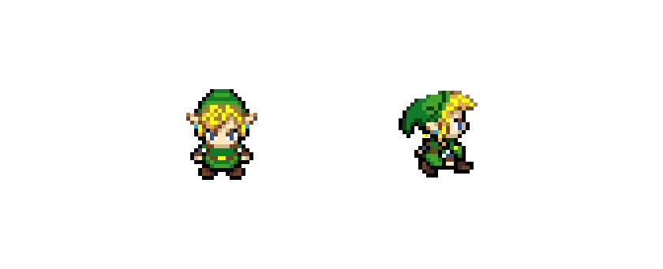
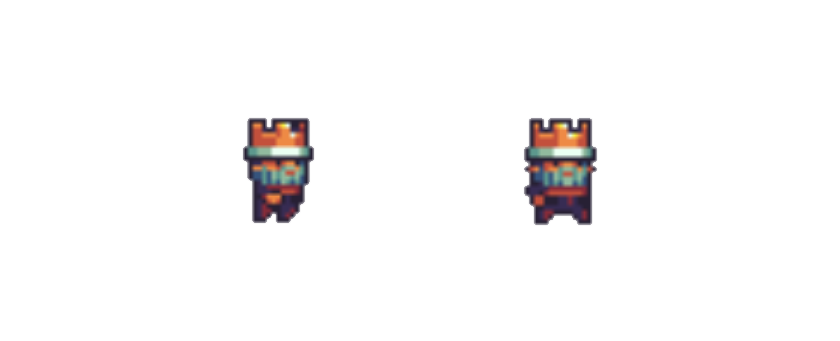

Sweeney – 20 Anos - Duende.
Sweeney é um jovem duende órfão que foi abandonado recém-nascido pelos pais que ele nunca conheceu. Ele cresceu frustrado e revoltado com a vida, passou a adolescência inteira treinando para ser um guerreiro e sonha em encontrar os pais.
Ele sempre anda bravo com o martelo feito com metal de moedas magicas de duendes, por ser feito deste material magico, o martelo sempre volta para o bolso dele, não importa onde ele jogue ou coloque, em menos de 15 segundos o martelo está de volta.
Movimentos: Andar, abaixar, pular, jogar martelo.
Rei Damva – 54 Anos – Duende

Damva é o grande Rei de Teburn, ele virou rei muito novo após o pai morrer na famosa guerra do Dagoruil. Ele cresceu já com o fardo de comandar um reino inteiro, teve que amadurecer rapidamente, mas ele deu conta dessa missão.
Ele é muito bom, justo e generoso.
Movimentos: NPC, aparece sempre preso e amarrado.